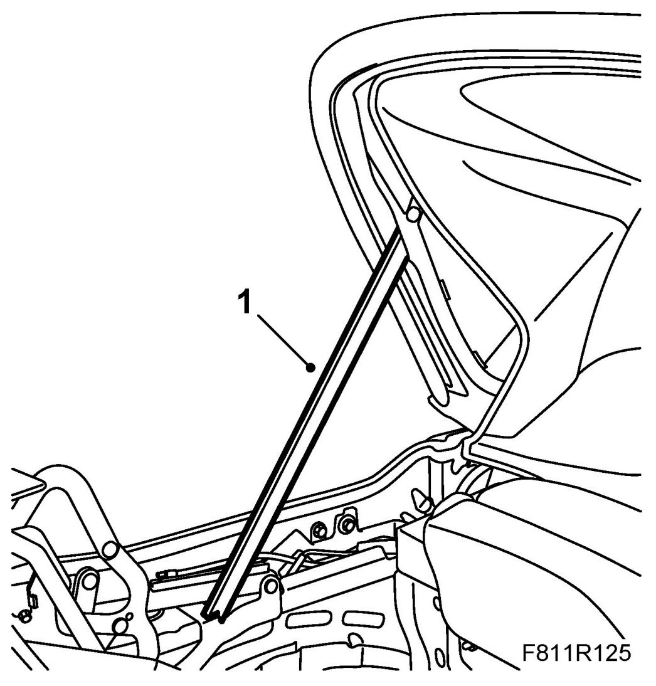
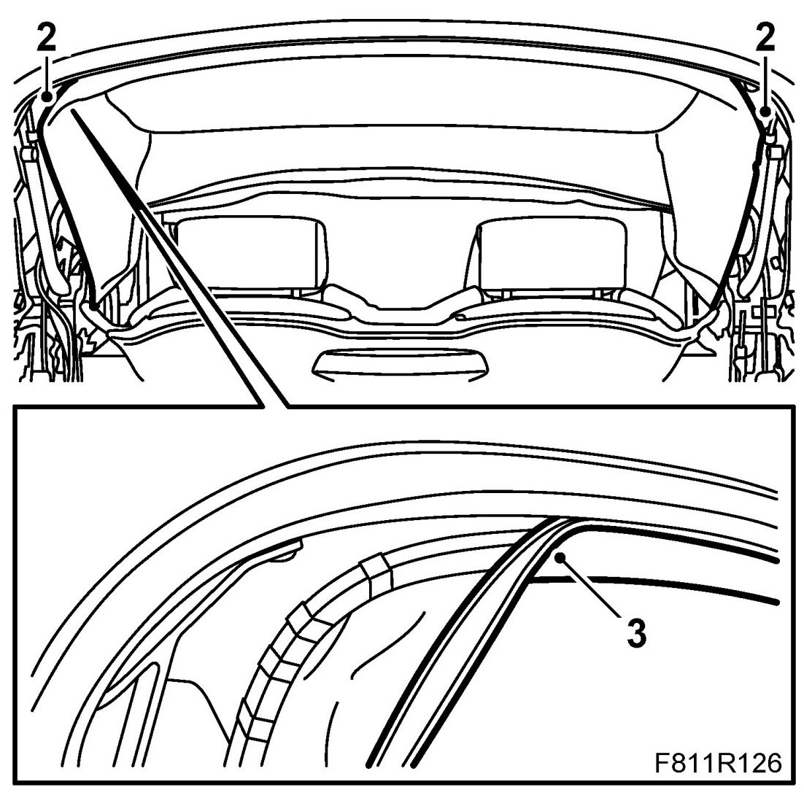
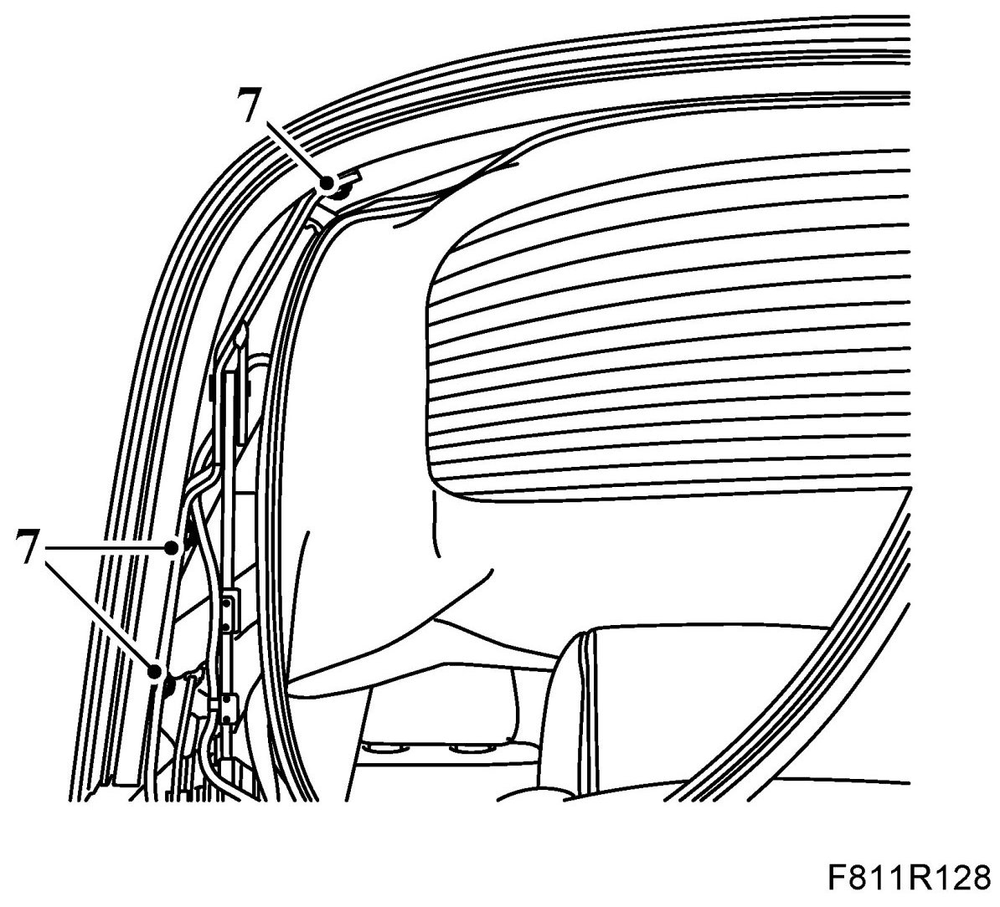
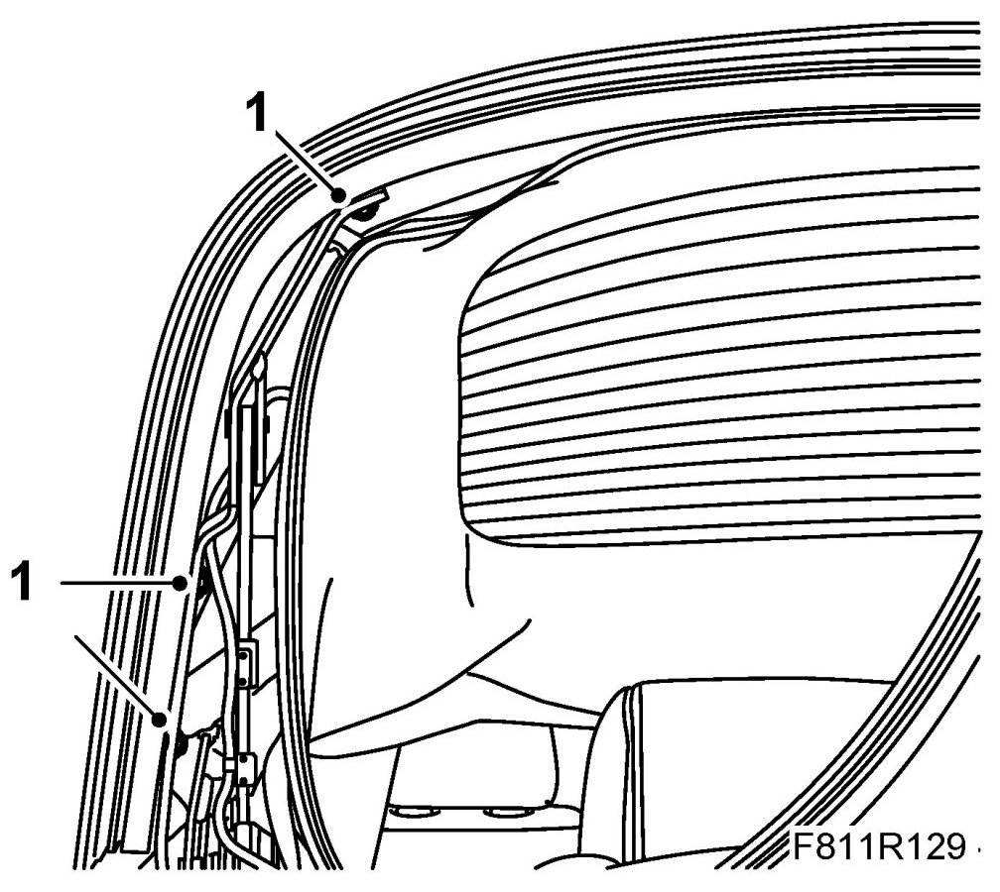
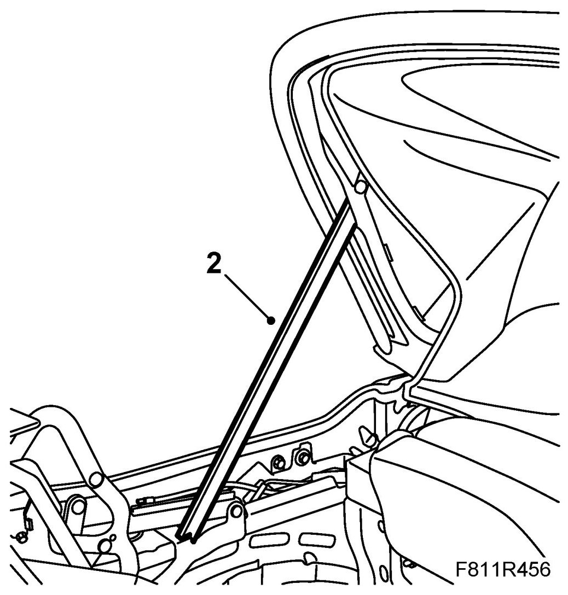
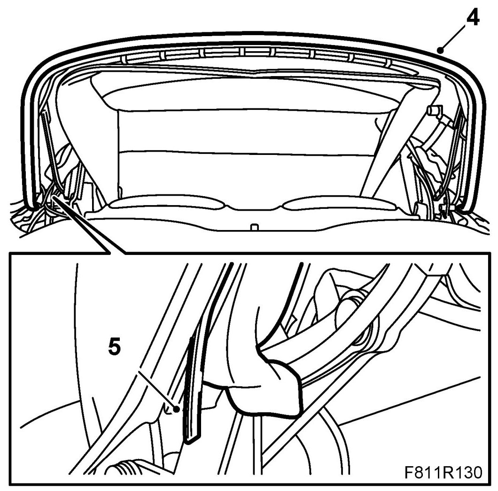
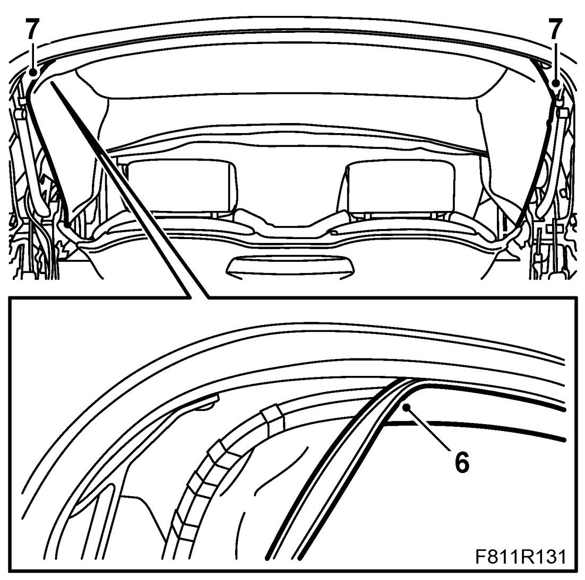

Sixth Bow
Sixth Bow
Removing
1. Open the soft top cover. Raise the sixth bow and support it with the soft top support.

2. Undo the headlining plastic clip

3. Remove the headlining edge reinforcing profile by pulling it out of the groove.
4. Pull out the sixth bow seal from the mounting groove and leave it hanging.
5. Pull out the sixth bow lock strip from the mounting groove.
6. Use the removal tool to remove the outer roof edging from the sixth bow. Pull out the outer roof locking profile from the groove and remove the outer roof from the sixth bow.
7. Remove the bolts for the sixth bow. Remove the sixth bow.
IMPORTANT: Look out for the soft top support that is propping up the sixth bow.

Fitting
1. Put the sixth bow in mounting position. Fit the sixth bow bolts.

2. Raise the sixth bow and support it with the soft top support.

3. Place the outer roof in the sixth bow groove. Note the centre markings on the parts.
4. Place the outer roof edging into the mounting groove on the sixth bow with the help of an assistant. Start at the middle and continue outward. Press in the edging using the removal tool.

5. Fit the lock strip using the removal tool into the mounting groove to lock the outer roof edging to the sixth bow.
6. Fit the headlining edge reinforcing profile at the rear of the sixth bow groove by pressing it in. Start at the middle and observe the centre markings on the parts.

7. Fit the headlining Velcro fastener.
8. Remove the soft top support and raise the soft top.